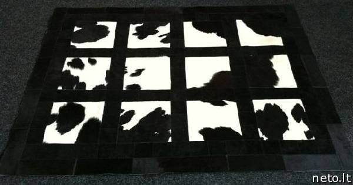
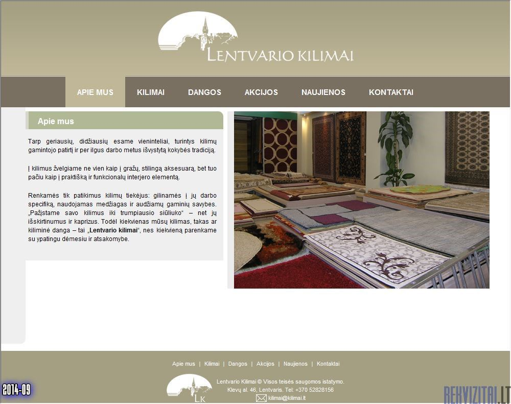

Kilimai
 Uždaryti (0)
Prekė pridėta mėgstamos prekės
Reikia pasirinkti mažiausiai vieną prekę
Lithuania Lietuvių English Pусский Lietuvių IKEA Family IKEA verslui Restoranas Darbas IKEA‘oje Kaip mus rasti? IKEA Family e. kortelė Prisijungti arba registruotis Prekės Šventiniai papuošimai Žvakės Sezoninis apšvietimas Žurnaliniai staliukai Korpusinės spintelės Knygų spintos Atviros lentynos TV stalai ir spintelės Spintų sistemos Atskiros spintos Komodos Čiužiniai Kušetės Virtuvinės vidinės detalės Vaikų kambario spintos Žaislai mažiems vaikams Lemputės Baterijos Paklodės ir pagalvių užvalkalai Antklodžių užvalkalai Antklodės Pagalvės Rankšluosčiai Užuolaidos Kilimai Durų kilimėliai ir priedai Puodai ir keptuvės Keptuvės ir gilios keptuvės Stalo indai ir serviravimas Stiklinės ir taurės Puodukai Rėmai Lauko stalai Sieninės lentos Daiktadėžės Dėžės ir krepšiai Vonios kambario šviestuvaiPopuliariausieji
Kalėdinės prekės išsinešti Kaune Prekės išsinešti Kaune Kalėdinės prekės išsinešti Klaipėdoje Prekės išsinešti Klaipėdoje Išmanusis apšvietimas Visos prekės Kambariai Svetainė Valgomasis Virtuvė Miegamasis Vonia Vaikų IKEA Namų biuras Prieškambaris IKEA verslui Maisto prekės Interjero detalės Kalėdos Idėjos Naujienos Kalėdinės prekės Žemesnė kaina (0)Prekė pridėta mėgstamos prekės
Reikia pasirinkti mažiausiai vieną prekę
Pagrindinis Kambariai Svetainė KilimaiKilimai
Prekės kategorija Kolekcijos Maži kilimai, kiliminiai takai Rytietiški kilimai Kilimai Durų kilimėliai ir priedai STOCKHOLMPrekių iš viso 207
Žiūrėti tik : Parduodama internetu Nauja 1 2 3 4 5 6 KitasTOFTLUND
kilimas
55x85 cm balta
9, 99 €
Greita peržiūraKOLDBY
karvės kailis
ruda
159 €
Yra daugiau variantų
Greita peržiūraKÖGE
durų kilimėlis
69 cm pilka-juoda
19, 99 €
Yra daugiau variantų
Greita peržiūraSÖNDERÖD
ilgo plauko kilimas
170x240 cm mėlyna
129 €
Greita peržiūraVINDUM
ilgo plauko kilimas
170x230 cm melsvai žalia
129 €
Yra daugiau variantų
Greita peržiūraVINDUM
ilgo plauko kilimas
170x230 cm balta
129 €
Yra daugiau variantų
Greita peržiūra Naujažemesnė
kaina
VINDUM
ilgo plauko kilimas
133x180 cm balta
Ankstesnė kaina 99 €
79 €
Yra daugiau variantų
Greita peržiūraKÖGE
durų kilimėlis
102x152 cm juoda-pilka
49, 99 €
Yra daugiau variantų
Greita peržiūraSTOPP
neslystantis patiesalas
67.5x200 cm
3, 49 €
Greita peržiūraVINDUM
ilgo plauko kilimas
200x270 cm balta
179 €
Yra daugiau variantų
Greita peržiūraMORUM
lygus kilimas, vidaus/lauko
80x200 cm tamsiai pilka
24, 99 €
Yra daugiau variantų
Greita peržiūraKOLDBY
karvės kailis
juoda
159 €
Yra daugiau variantų
Greita peržiūraOPLEV
durų kilimėlis
50x80 cm pilka
9, 99 €
Greita peržiūra IKEA Family kainaSÖLLINGE
lygaus audimo kilimas
65x150 cm smėlinė
12, 99 €
Įprasta kaina 15, 99 €
Yra daugiau variantų
Greita peržiūraTÖRSLEV
lygaus audimo kilimas
80x150 cm balta-juoda
19, 99 €
Greita peržiūraGLUMSÖ
lygaus audimo kilimas
133x195 cm šviesi pilka
99 €
Greita peržiūraVINDUM
ilgo plauko kilimas
200x270 cm tamsiai pilka
179 €
Yra daugiau variantų
Greita peržiūra Naujažemesnė
kaina
VINDUM
ilgo plauko kilimas
133x180 cm tamsiai pilka
Ankstesnė kaina 99 €
79 €
Yra daugiau variantų
Greita peržiūraTRAMPA
durų kilimėlis
60x90 cm natūrali
12, 99 €
Yra daugiau variantų
Greita peržiūraFÅRDRUP
kilimas
60x100 cm pilka
12, 99 €
Greita peržiūraSIVESTED
durų kilimėlis
60x90 cm tamsiai pilka
4, 99 €
Yra daugiau variantų
Greita peržiūraKÖGE
durų kilimėlis
82x200 cm juoda-pilka
49, 99 €
Yra daugiau variantų
Greita peržiūraOKSBY
durų kilimėlis
60x90 cm pilka
9, 99 €
Greita peržiūraTÖRSLEV
lygaus audimo kilimas
60 cm juodos ir baltos sp.
9, 99 €
Greita peržiūraJERSIE
durų kilimėlis
60 cm tamsiai pilka
9, 99 €
Greita peržiūraLUMSÅS
trumpo plauko kilimas
120x180 cm įvairių spalvų-pilka
15, 99 €
Greita peržiūra IKEA Family kainaSÖLLINGE
lygaus audimo kilimas
65x150 cm pilka
12, 99 €
Įprasta kaina 15, 99 €
Yra daugiau variantų
Greita peržiūraYDBY
durų kilimėlis
58 cm juoda
9, 99 €
Greita peržiūraVINDUM
ilgo plauko kilimas
170x230 cm tamsiai pilka
129 €
Yra daugiau variantų
Greita peržiūraTORRILD
trumpo plauko kilimas
133x195 cm įvairių spalvų
39, 99 €
Greita peržiūraVISTOFT
lygaus audimo kilimas
170x240 cm natūrali
119 €
Yra daugiau variantų
Greita peržiūraALVINE
lygaus audimo kilimas
170x240 cm pilka
239 €
Greita peržiūraSKOLD
avikailis
92x160 cm tamsiai ruda
179 €
Greita peržiūraSIVESTED
durų kilimėlis
40x60 cm tamsiai pilka
3, 49 €
Yra daugiau variantų
Greita peržiūraLOHALS
lygaus audimo kilimas
80x150 cm natūrali
24, 99 €
Yra daugiau variantų
Greita peržiūraLUSTRUP
trumpo plauko kilimas
120x180 cm įvairių spalvų-pilka
15, 99 €
Greita peržiūraTRAMPA
durų kilimėlis
40x60 cm natūrali
4, 99 €
Yra daugiau variantų
Greita peržiūraKRISTRUP
durų kilimėlis
35 cm tamsi mėlyna
0, 79 €
Greita peržiūraBRÖNDEN
trumpo plauko kilimas
170x240 cm įvairių spalvų
279 €
Greita peržiūraHELLESTED
lygaus audimo kilimas
133x195 cm natūrali-ruda
49, 99 €
Yra daugiau variantų
Greita peržiūra 1 2 3 4 5 6 KitasKilimai IDĖJOS ir įkvėpimas
Modernus stilius namuose: svetainė ar galerija?
Ši svetainė priklauso kolekcininkų porai. Moderni spalvų gama ir atviros lentynos – puikus fonas jų demonstruojamiems lobiams: rėmeliai nuotraukoms ir paveikslams, stikliniai gaubtai ir stovas su padėklais – suvenyrams, o nesenstančio dizaino odinė sofa – jaukiam poilsiui baigus visa tai apžiūrinėti.
Butas porai: daug istorijų mažoje erdvėje
Nedidelis studijos tipo butas priemiestyje įrengtas taip, kad jame būtų patogu daug keliaujančiai ir įspūdžius kaupiančiai porai. Spintelės HAVSTA tinka viskam: jose telpa knygos, žemėlapiai ir suvenyrai, nuotraukas iš kelionių saugo rėmeliai ant sienų, o už sofos slepiasi nešiojamojo kompiuterio stalas VITTSJÖ darbui ir būsimų kelionių paieškoms.
Erdvi svetainė vertinantiems stilių ir kokybę
Kai galite sau leisti daugiau ir turite didelį butą miesto centre, svetainės erdvę galite įrengti iš tiesų įspūdingai. Šioje gyvena verslininkų pora, pasirinkusi griežtą, šiuolaikišką stilių. Oda aptraukti foteliai ir kampinė sofa LANDSKRONA – laikui nepavaldūs svetainės baldai, kuriems suteikiame 10 metų garantiją.
Sekite mus
Naudingos nuorodos
Apie IKEA Katalogas ir brošiūros IKEA paslaugos Planavimo programos Pirkėjo gidai Darbas IKEA oje Kontaktai Atšaukti produktai Pirkimo–pardavimo taisyklės DUK© Inter IKEA Systems B.V. 2020
Privatumo politika Bendrosios naudojimo sąlygos Slapukų politika ×Uždaryti
Atšaukti Pašalinti adresą
